Come sapere se qualcuno ha sporto una denuncia a mio carico
Sospettare di essere oggetto di una denuncia genera comprensibile ansia. L'ordinamento offre uno strumento concreto per verificarlo: l'istanza ex art. 335 del codice di procedura p…

Detenzione domiciliare per tossico e alcoldipendenti: cosa cambia
Torna al centro del dibattito l'accesso alla detenzione domiciliare per condannati tossicodipendenti o alcoldipendenti che intraprendano un percorso terapeutico. La misura non è un…

Chi decide la residenza del figlio se i genitori litigano
Quando i genitori non trovano un accordo sul luogo di residenza del figlio, la decisione può passare al giudice. La riforma Cartabia ha ridisegnato il rito e rafforzato l'ascolto d…

Congedo parentale: fino a che età del figlio si può chiedere
Il congedo parentale consente ai genitori di astenersi dal lavoro nei primi anni di vita del figlio, con un limite legato all'età del bambino. Le regole cambiano in modo netto tra …

L'ammonimento per stalking: quando scatta e come reagire
L'ammonimento per stalking è un provvedimento amministrativo emesso dal questore per bloccare condotte persecutorie prima ancora di un processo penale. Una recente pronuncia ammini…

Fatture contestate: come provarne la genuinità e difendersi dai controlli
L'Agenzia delle Entrate contesta sempre più spesso la genuinità delle fatture, con ricadute che dal piano tributario si estendono a quello penale. Capire chi deve provare cosa, e d…

Rottamare l'auto del defunto: quando serve l'autorizzazione del giudice
Rottamare l'auto del defunto è un atto di ordinaria gestione o richiede l'autorizzazione del giudice? La distinzione conta soprattutto per chi ha accettato l'eredità con beneficio …

Assegno divorzile e delega sul conto del figlio: la prova presuntiva
La Corte di Cassazione avrebbe ridotto un assegno divorzile valorizzando la delega dell'ex coniuge sul conto corrente del figlio, letta come indizio di disponibilità economiche non…

Messa alla prova: i criteri della Cassazione sul programma UEPE
La Corte di Cassazione ha precisato come il giudice deve valutare il programma di trattamento predisposto dall'UEPE nella messa alla prova, tra finalità rieducativa, personalità de…

Massimale minimo RC auto: cosa prevede la legge
Ogni polizza RC auto deve garantire un risarcimento almeno pari a un importo minimo stabilito dalla legge. Questo limite, previsto dal Codice delle Assicurazioni Private, viene agg…

Maltrattamenti e dichiarazioni della vittima: serve la registrazione audiovisiva?
Le parole di chi denuncia maltrattamenti hanno un peso decisivo nel processo penale. Ma quando la vittima è ritenuta vulnerabile, la legge impone che le sue dichiarazioni davanti a…

Affidamento terapeutico e tossicodipendenza: cosa cambia davvero
Si torna a parlare di misure alternative al carcere per i condannati tossicodipendenti, tra annunci di riforma e diritto già vigente. Vale la pena distinguere ciò che la legge prev…
Stalking su minori e benefici penitenziari: il nodo dell'irretroattività
Un recente orientamento della Cassazione torna sul rapporto tra riforme penali più severe e reati già consumati. Il tema riguarda i benefici penitenziari per il delitto di atti per…
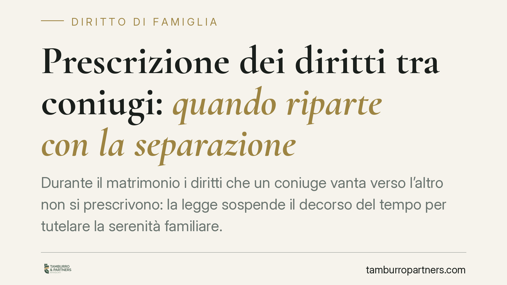
Prescrizione dei diritti tra coniugi: quando riparte con la separazione
Durante il matrimonio i diritti che un coniuge vanta verso l'altro non si prescrivono: la legge sospende il decorso del tempo per tutelare la serenità familiare. La domanda è quand…
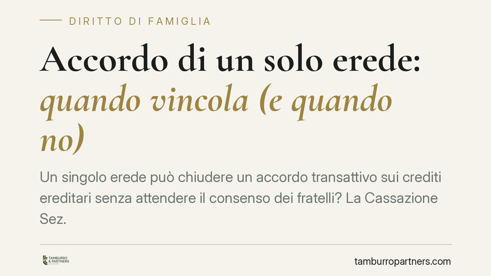
Accordo di un solo erede: quando vincola (e quando no)
Un singolo erede può chiudere un accordo transattivo sui crediti ereditari senza attendere il consenso dei fratelli? La Cassazione Sez. III risponde di sì, ma con un limite netto: …
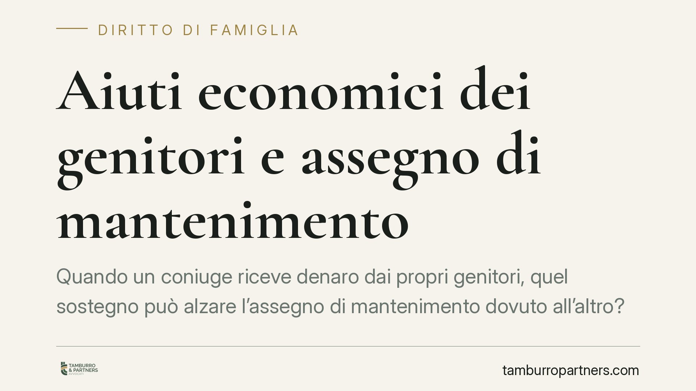
Aiuti economici dei genitori e assegno di mantenimento
Quando un coniuge riceve denaro dai propri genitori, quel sostegno può alzare l'assegno di mantenimento dovuto all'altro? La Cassazione distingue tra atto di generosità occasionale…
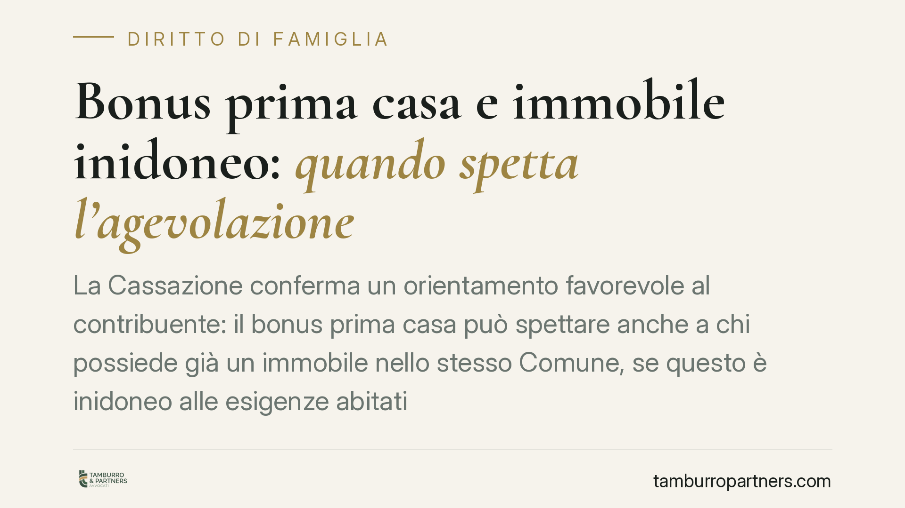
Bonus prima casa e immobile inidoneo: quando spetta l'agevolazione
La Cassazione conferma un orientamento favorevole al contribuente: il bonus prima casa può spettare anche a chi possiede già un immobile nello stesso Comune, se questo è inidoneo a…
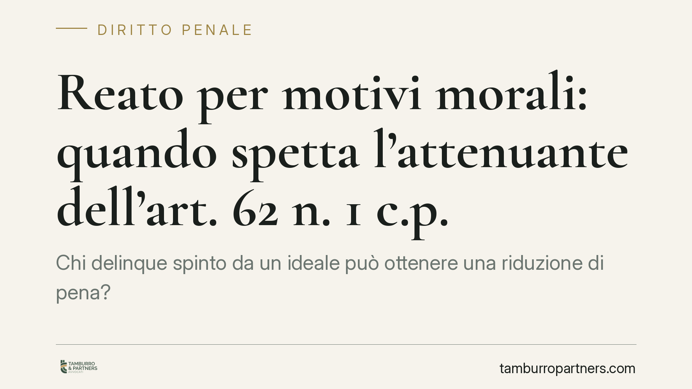
Reato per motivi morali: quando spetta l'attenuante dell'art. 62 n. 1 c.p.
Chi delinque spinto da un ideale può ottenere una riduzione di pena? La legge lo consente solo se il movente ha un valore morale o sociale riconosciuto dalla collettività, non se r…
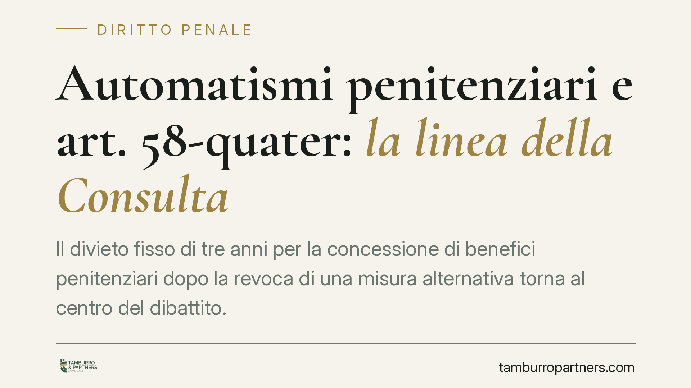
Automatismi penitenziari e art. 58-quater: la linea della Consulta
Il divieto fisso di tre anni per la concessione di benefici penitenziari dopo la revoca di una misura alternativa torna al centro del dibattito. Il tema si inserisce in un filone c…
Sequestro dello smartphone nelle indagini penali: i limiti tra prova e privacy
Lo smartphone è oggi un archivio della vita privata. Per questo il suo sequestro nelle indagini penali pone un problema delicato: fino a che punto l'esigenza investigativa può comp…
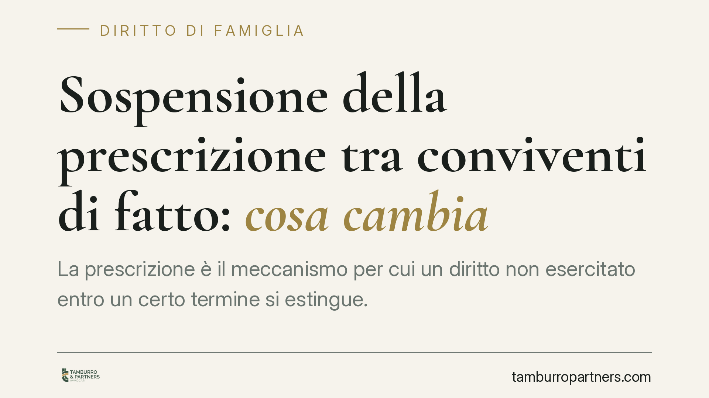
Sospensione della prescrizione tra conviventi di fatto: cosa cambia
La prescrizione è il meccanismo per cui un diritto non esercitato entro un certo termine si estingue. Tra coniugi resta sospesa: la legge non vuole che un rapporto affettivo costri…
Affitti e pignoramento estinto: a chi spettano i canoni
Quando l'immobile pignorato è locato, i canoni confluiscono nella procedura esecutiva. Ma se il pignoramento si estingue, chi incassa gli affitti maturati? La questione tocca propr…
Arresti domiciliari e uso di chat e social: cosa è consentito
L'uso di smartphone, chat e social durante gli arresti domiciliari solleva un dubbio ricorrente: comunicare a distanza è consentito? La risposta dipende dal contenuto dell'ordinanz…
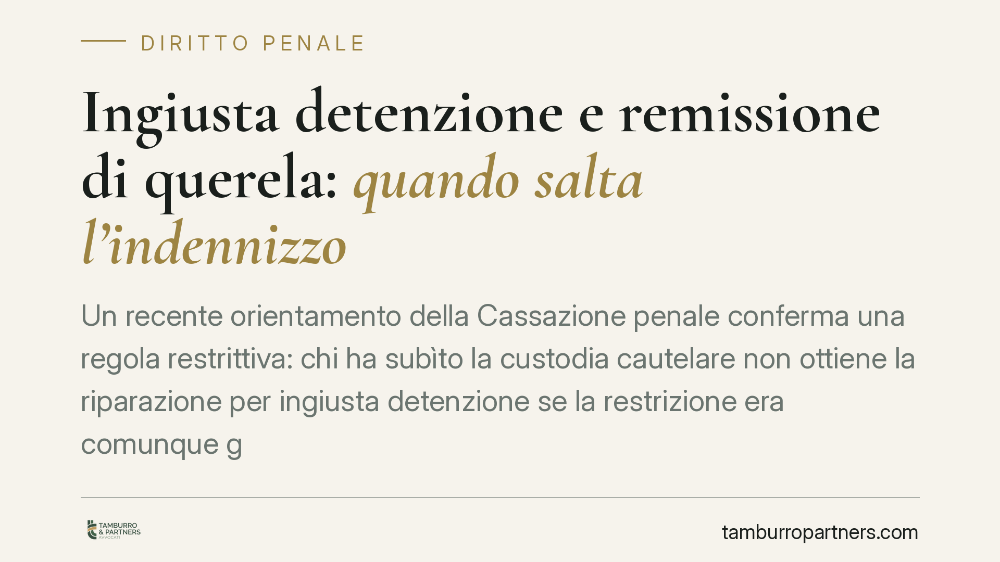
Ingiusta detenzione e remissione di querela: quando salta l'indennizzo
Un recente orientamento della Cassazione penale conferma una regola restrittiva: chi ha subìto la custodia cautelare non ottiene la riparazione per ingiusta detenzione se la restri…
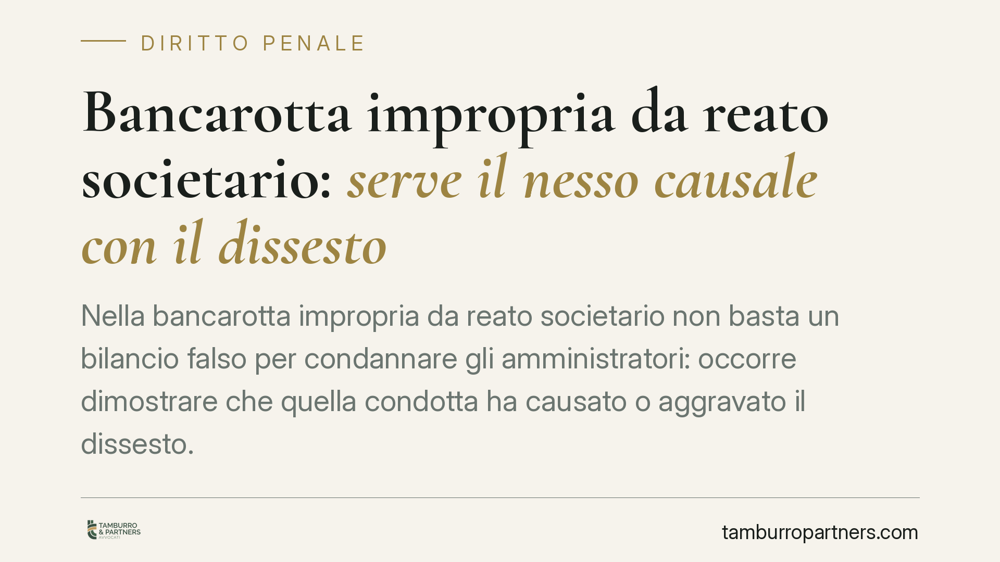
Bancarotta impropria da reato societario: serve il nesso causale con il dissesto
Nella bancarotta impropria da reato societario non basta un bilancio falso per condannare gli amministratori: occorre dimostrare che quella condotta ha causato o aggravato il disse…
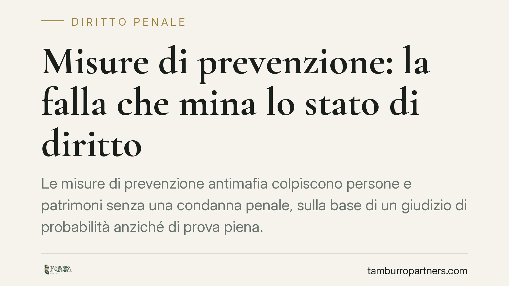
Misure di prevenzione: la falla che mina lo stato di diritto
Le misure di prevenzione antimafia colpiscono persone e patrimoni senza una condanna penale, sulla base di un giudizio di probabilità anziché di prova piena. Un modello che la Cort…
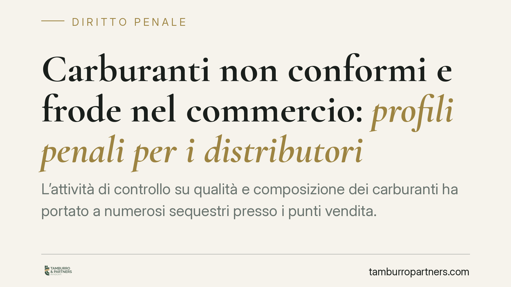
Carburanti non conformi e frode nel commercio: profili penali per i distributori
L'attività di controllo su qualità e composizione dei carburanti ha portato a numerosi sequestri presso i punti vendita. Per i distributori il tema non è solo tributario: la conseg…
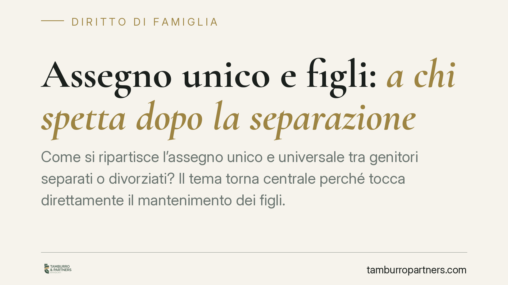
Assegno unico e figli: a chi spetta dopo la separazione
Come si ripartisce l'assegno unico e universale tra genitori separati o divorziati? Il tema torna centrale perché tocca direttamente il mantenimento dei figli. La regola operativa …
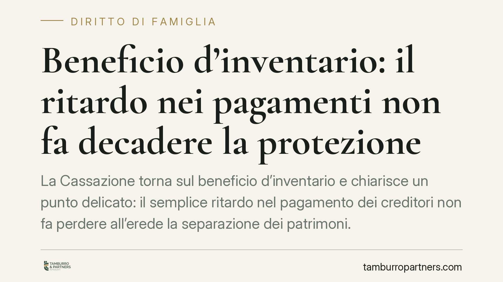
Beneficio d'inventario: il ritardo nei pagamenti non fa decadere la protezione
La Cassazione torna sul beneficio d'inventario e chiarisce un punto delicato: il semplice ritardo nel pagamento dei creditori non fa perdere all'erede la separazione dei patrimoni.…
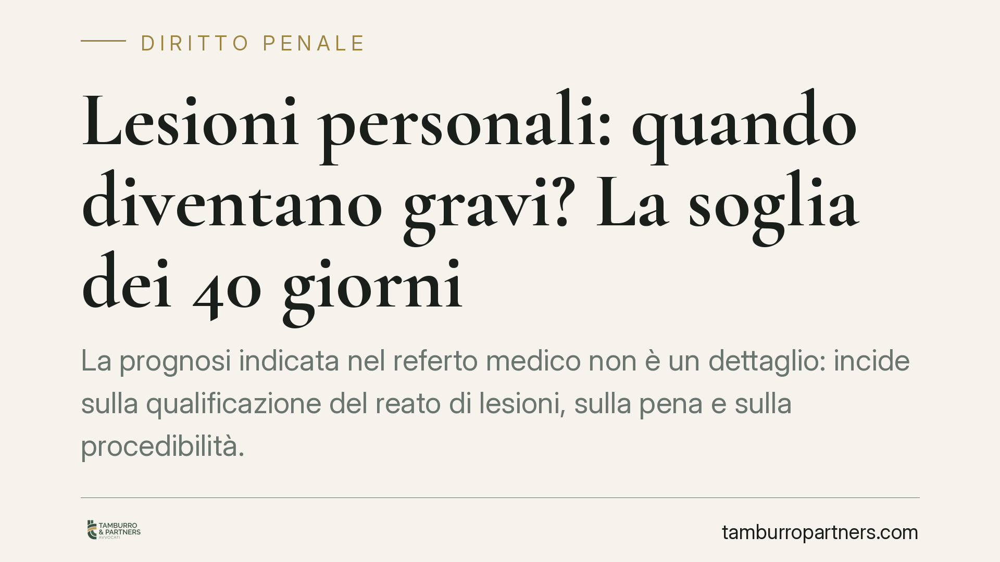
Lesioni personali: quando diventano gravi? La soglia dei 40 giorni
La prognosi indicata nel referto medico non è un dettaglio: incide sulla qualificazione del reato di lesioni, sulla pena e sulla procedibilità. Capire quando si passa da lesioni or…